High 01
Preview가 약속한 artifact를 그대로 가져갈 수 없다
`체크리스트 24개`를 봤지만 CTA는 `캘린더 24개`, 외부 형식은 sheet/memo로 갈린다. Preview와 preflight가 같은 plan을 읽어야 한다.
/f/moving-d30-basic
390 · 1024
390 · 1024
3탭, result-first, library/workspace, date lens는 유지한다. Artifact 약속, 저장 완료, shape별 실행 단위, 메모 proposal만 bounded revision한다.
기능이 없어서 막히기보다, 서로 다른 frame이 같은 결정을 다시 묻거나 같은 콘텐츠를 다른 문법으로 보여 주는 문제가 남았다.
`체크리스트 24개`를 봤지만 CTA는 `캘린더 24개`, 외부 형식은 sheet/memo로 갈린다. Preview와 preflight가 같은 plan을 읽어야 한다.
Public receipt 다음에 My Flow가 다시 저장됨을 알리고 첫 할 일, 전체 Flow, Calendar, 가져가기를 경쟁시킨다.
날짜 묶음, checklist, occurrence, current row가 하나의 추상 탭에 들어간다. Wide는 또 다른 정보 순서를 쓴다.
제목, 상세, 개별 날짜는 저장 후에만 수정된다. Full editor 대신 한 row contextual edit가 필요하다.
Public Flow의 result-first 문법을 재사용하지 않고, artifact와 external destination 없이 저장만 요구한다.
시작일을 비우면 미리보기는 날짜가 있는 월·수·금 반복처럼 보이지만, 저장 뒤에는 날짜 없는 1개 항목과 Calendar 0개로 바뀐다.
새 Flow에서는 진행률 설명만 보이고, memo·history·reflection·reuse의 경계가 이름에 드러나지 않는다.
Wide side agenda는 좋지만 mobile은 선택일 항목을 보려 긴 스크롤이 필요하다. Bottom sheet가 동일 ownership을 더 잘 보존한다.
| Shape | Session A | Session B | Session C | 390 / 1024 evidence |
|---|---|---|---|---|
| Calendar timeline | preview·anchor·adjust·receipt | 24개 plan·Item detail | whole/selected/current·reuse 계약 | 02-06, 12-14, 64 |
| Undated checklist | 10개 preview·undated save | 완료/undo·title/date edit·Calendar·reload | 10/2/1 scope | 33-42, 65 |
| Routine occurrence | 요일·07:30·15분·8회 | receipt·workspace·완료/undo | Calendar·record·export | 43-47, 59-63, 66 |
| Sheet progress | 8행 preview·save | 완료/undo·8행 plan | Sheet 8행·Calendar 0 | 49-53, 67 |
| Memo/Guide | 공식 source·Memo 4개 | 완료/undo·4개 plan | Memo 4개·reload | 54-58, 68 |
| ID | 판정 | 선택 | 결론 |
|---|---|---|---|
| F01 | supported | Contextual Item edit | title/detail/date만 저장 전 personal proposal로 수정한다. |
| F02 | partly_supported | Short receipt + whole workspace | 오늘로 보내지 않고 중복 receipt와 4-path hub를 제거한다. |
| F03 | supported | Shape-aware next unit | 날짜 묶음, next 1-3, occurrence, current row를 shape별로 사용한다. |
| F04 | supported | Artifact preflight | Primary 1개와 eligible secondary 최대 2개 뒤 destination을 고른다. |
| F05 | partly_supported | Action-specific recovery | 사라지는 대상은 undo, 남는 row는 toggle, 삭제/보관은 restore를 쓴다. |
| F06 | supported | 고정 탭 제거 | Shape별 실행 단위를 whole plan 상단에 통합한다. |
| F07 | supported | 문맥별 분리 | Item memo, event history, run reflection, reuse의 owner를 나눈다. |
모든 여정은 끝까지 갈 수 있지만, 이해와 예측의 연결은 모두 partial이다.
| Journey | Session A | Session B | Session C | 가장 큰 단절 |
|---|---|---|---|---|
| J01 이사Calendar timeline | partial | partial | partial | Checklist preview/export 불일치, same-date group 없음 |
| J02 차량Undated checklist | partial | supported | supported | Todo/checklist preflight 불명확 |
| J03 홈트Routine occurrence | partial | partial | partial | 미확정 preview 날짜가 저장 후 사라지고 current occurrence가 숨음 |
| J04 학습Sheet progress | partial | partial | partial | Current row와 전체 진도의 관계가 약함 |
| J05 안전Memo/Guide | partial | partial | partial | Memo artifact와 일반 task 실행 문법의 연결이 약함 |
추가 경로 `/flows`의 개인 메모 초안은 5개 proposal 뒤 input 14개, 390px 문서 높이 1541px로 측정됐다. 저장·완료는 가능하지만 public result-first와 같은 artifact preflight를 쓰지 않는다.
탭을 더 만들지 않는다. 화면마다 한 질문과 하나의 primary action만 남긴다.
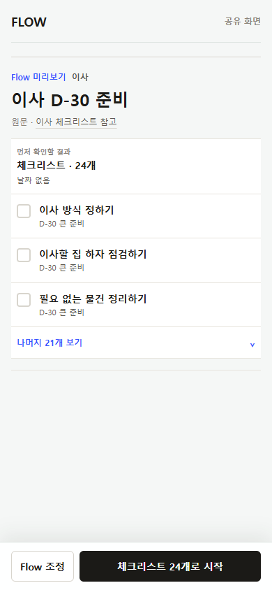
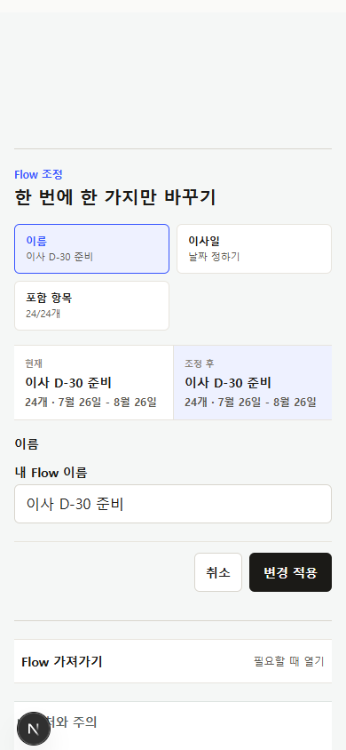
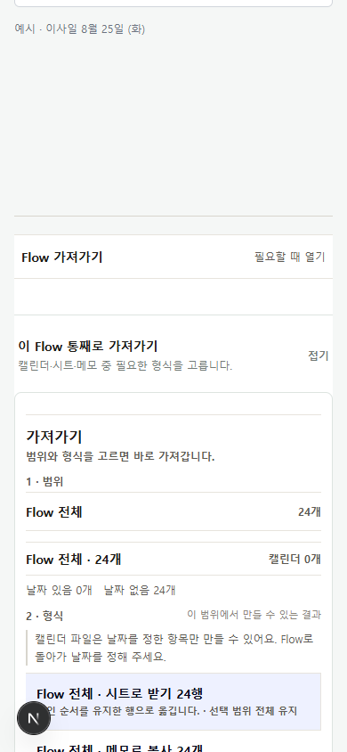
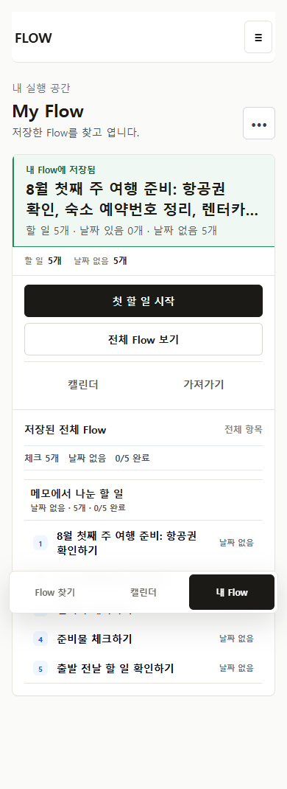
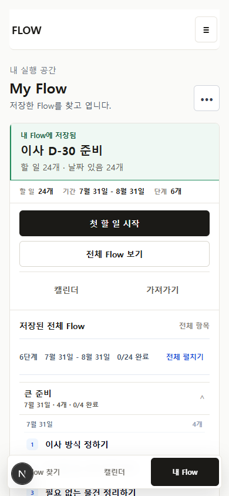
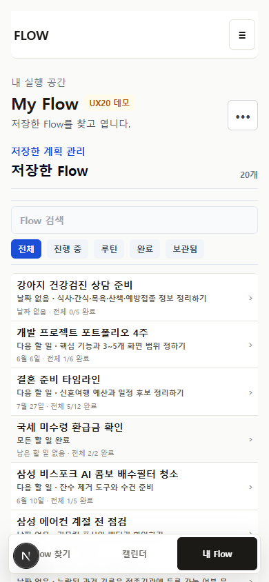
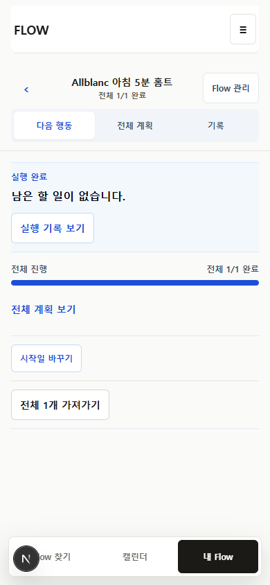
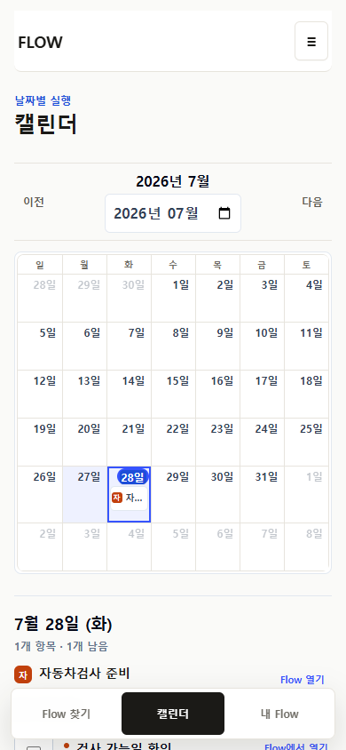
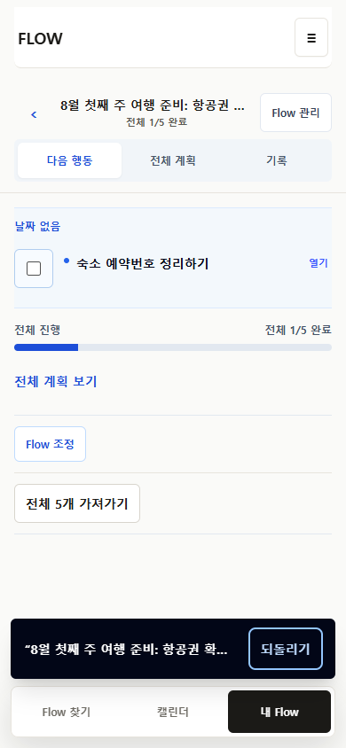
아침 5분 전신 운동 · 영상 자료 1개
모바일을 늘이지 않고 library rail, plan canvas, contextual inspector를 사용한다.
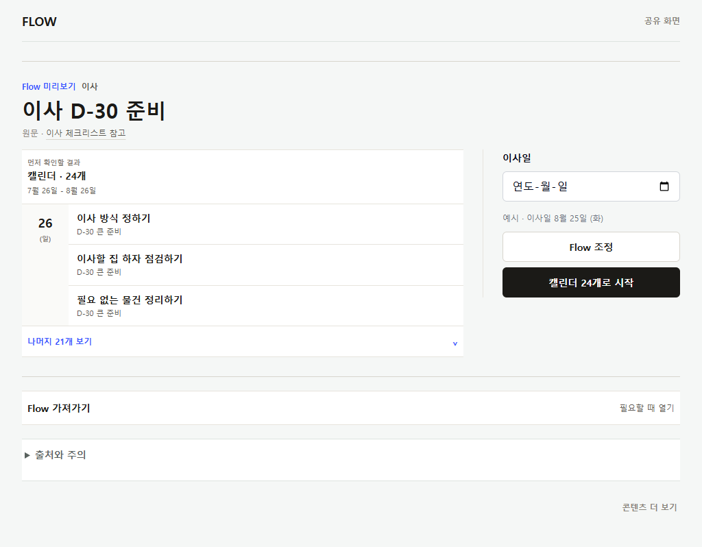
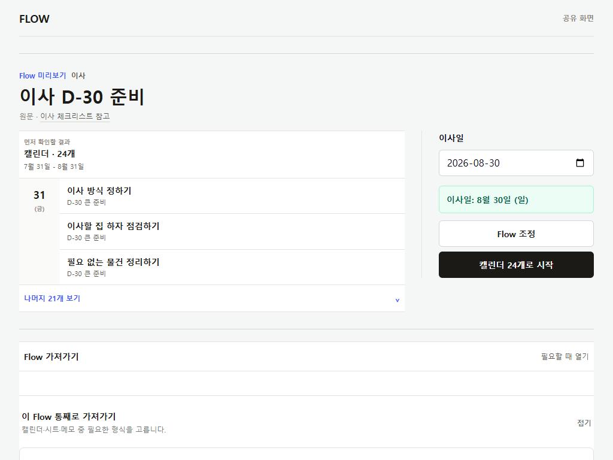
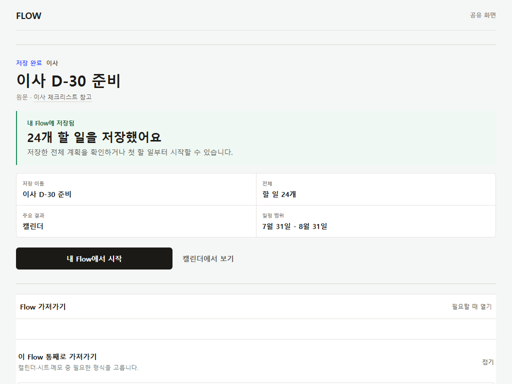
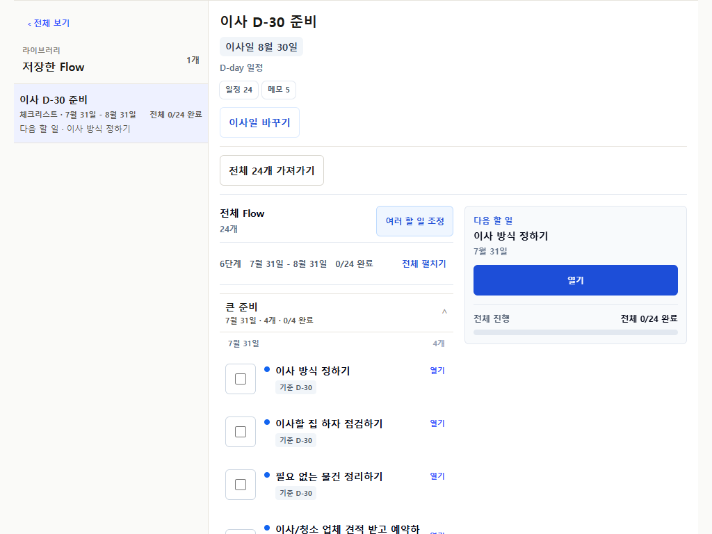
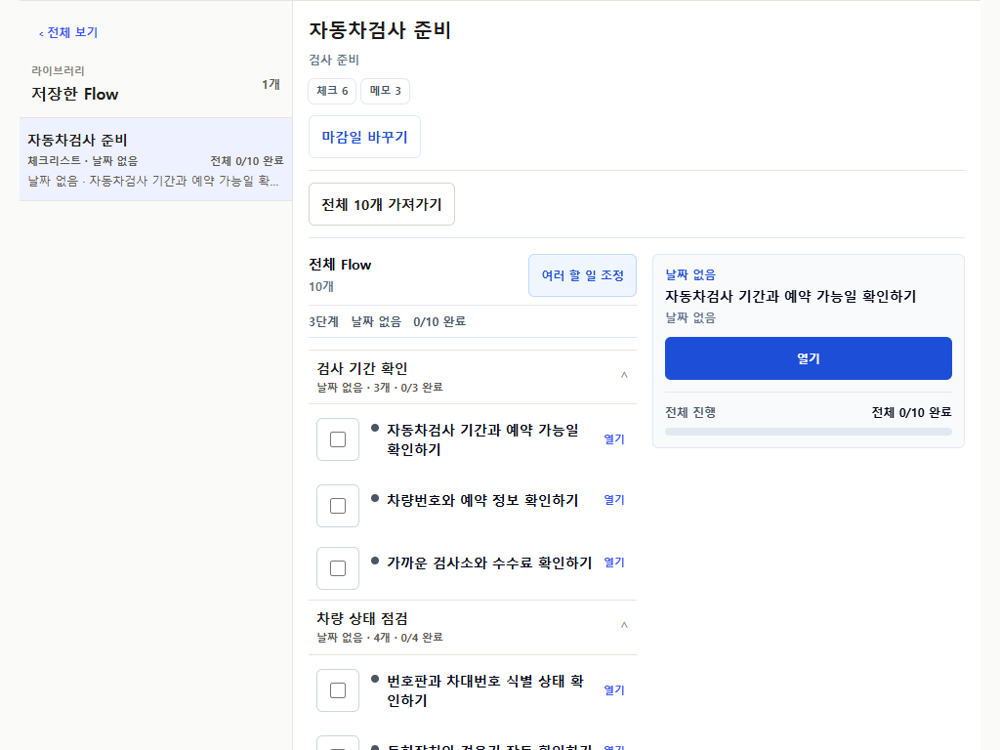
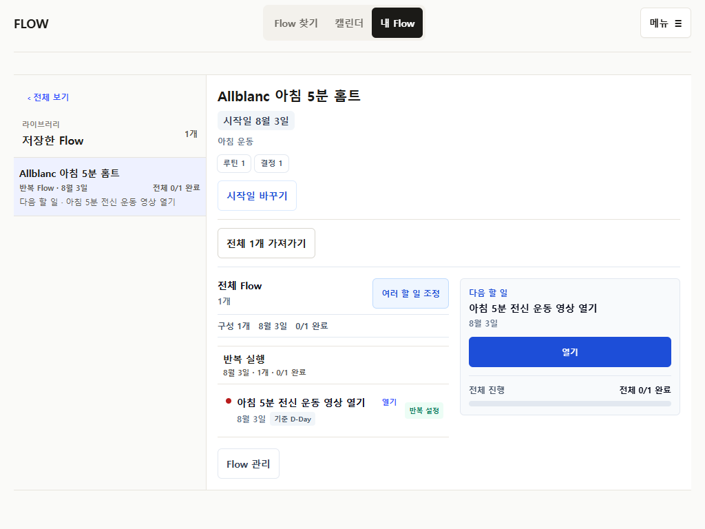
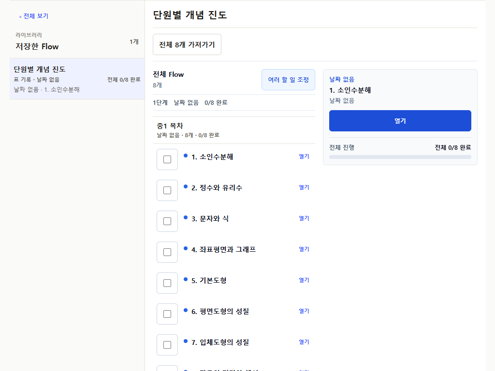
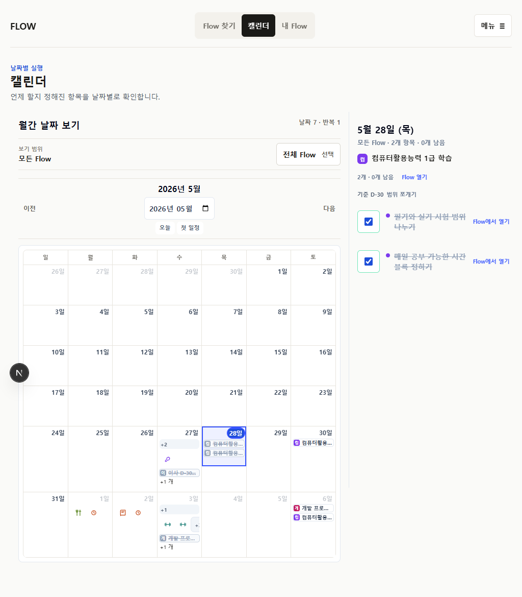
날짜 없이 My Flow에서 진행합니다.
영상 자료 1개
| 제품 | 공식 패턴 | 판정 | FlowMe 적용 |
|---|---|---|---|
| Todoist | Task detail에서 title/date/description과 object command | adapt | 저장 전/후 같은 contextual Item sheet를 쓰되 planner 필드는 줄인다. |
| Things | Today는 시간 lens, project는 전체 context, Logbook은 과거 기록 | adopt | Calendar와 personal Flow의 소유권을 분리하고 history는 event archive로 좁힌다. |
| Google Calendar Tasks | 날짜 있는 task만 Calendar, detail에서 edit, repeat scope 구분 | adapt | Calendar date lens와 mobile day sheet는 적용, undated queue는 My Flow에 둔다. |
| Notion | 같은 data의 여러 view, side/center/full contextual page | adapt | 같은 effective data projection과 1024 inspector만 차용한다. 고정 5 view tab은 금지한다. |
| Wanderlog | 날짜별 itinerary와 compact whole-plan view | adapt | 날짜형 next group과 전체 Flow grouping에 적용한다. |
| Strava | Current activity와 weekly history를 분리 | adapt | Current occurrence를 primary, event history를 optional section으로 둔다. |
| Nike Training Club | Plan, schedule, current workout, progress의 단계 분리 | adapt | Routine에만 occurrence hierarchy를 적용하되 별도 완료 동사 체계는 만들지 않는다. |
| Planner view bundle | Calendar/List/Board/Sheet를 모든 object에 고정 노출 | reject | Primary 1개와 실제 가치가 있는 secondary 최대 2개만 projection한다. |
| Workout-only verbs | 운동에만 별도 완료·강도·휴식 command 체계 적용 | reject | 완료·다시 열기·건너뛰기는 공통 문법을 유지하고 occurrence만 구분한다. |
어떤 콘텐츠를 Flow로 쓸 수 있는가?
저장하거나 가져가면 무엇이 만들어지는가?
무엇이 정확히 저장됐는가?
어느 Flow를 열 것인가?
이 Flow에서 지금 무엇을 하는가?
날짜가 정해진 항목이 언제 있는가?
기능을 지우는 표가 아니라 같은 결정을 여러 frame에서 다시 묻지 않게 하는 표다.
| Command | 판정 | 최종 owner | 이유 |
|---|---|---|---|
| Flow 조정 | Keep | Public result | 실제 artifact 아래의 secondary action |
| Item 제목·상세·날짜 수정 | Move | Preview row contextual sheet | 저장 후 editor를 personal proposal에 재사용 |
| FlowMe 저장·외부 가져가기 | Move | Artifact preflight | 이름·count·손실을 확인한 뒤 destination 결정 |
| 저장한 전체 Flow 보기 | Move | Saved receipt primary | 중복 hub 없이 저장 객체를 먼저 확인 |
| 첫 할 일 시작 / Calendar / 가져가기 | Remove | Post-save hub 제거 | 각각 workspace, top-level Calendar, export owner가 이미 있음 |
| 다음 행동 tab | Remove | Shape-aware execution unit | 날짜 묶음·checklist·occurrence·current row로 대체 |
| 전체 계획 tab | Move | Personal Flow persistent section | 실행 중에도 plan context 유지 |
| 기록 tab | Remove | Event가 있을 때 history disclosure | 빈 run copy는 독립 surface가 아님 |
| 완료·다시 열기 | Move | Row와 Item detail의 동일 primitive | 상세를 열어도 실행을 잃지 않음 |
| Whole / selected / current 가져가기 | Keep | Flow workspace / Item detail | 범위 소유권이 명확함 |
| Calendar selected-day detail | Move | 390 bottom sheet / 1024 side agenda | 날짜 선택과 상세의 공간적 연결 유지 |
R1부터 검증하고 다음으로 이동한다. 앱 계약을 다시 쓰지 않는다.
Preview와 external result의 이름, count, loss를 하나의 artifact plan으로 맞추고 반복 일정의 예시 값과 확정 값을 구분한다.
R1 · first
migration noneTitle, detail, date만 한 row sheet에서 수정한다. Full editor는 만들지 않는다.
R2 · after R1 adapter중복 저장 receipt와 4-path hub를 제거하고 전체 Flow로 곧바로 이어 준다.
R3 · depends R1고정 모바일 탭을 날짜 묶음, checklist, occurrence, current row로 대체한다.
R4 · depends R314-input form을 actual artifact preview와 contextual edit로 바꾼다.
R5 · depends R1-R3390px은 bottom sheet, 1024px은 현재 side agenda를 유지한다.
R6 · parallel after R35 shape, 3 session, 390/1024, Preview direct smoke를 다시 확인한다.
R7 · final